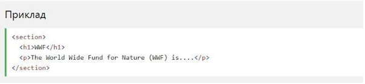

Підтримка браузерів
Семантичні елементи HTML5 підтримуються у всіх сучасних браузерах.
Крім того, ви можете "навчити" старих браузерів, як обробляти "невідомі елементи".
Прочитайте про це в підтримці браузера HTML5.
Нові семантичні елементи в HTML5
Багато веб-вузли містять HTML-код, наприклад: <div ID = "NAV">
<div class = "заголовок"> <div ID = "нижній колонтитул">
для позначення навігації, верхнього і нижнього колонтитулів.
HTML5 пропонує нові семантичні елементи для визначення різних частин
веб-сторінки:
HTML5 <section> елемент
Елемент <section> визначає розділ в документі.
Згідно з документацією в3к'с HTML5: "розділ представляє собою тематичну
угруповання контенту, зазвичай з заголовком".
Домашня сторінка зазвичай може бути розділена на розділи для
ознайомлення,змісту і контактної інформації.

HTML5 <article> елемент
HTML5 <article> визначає незалежний, автономний вміст.
Стаття повинна мати сенс самостійно, і вона повинна мати можливість
читати його незалежно від іншої частини веб-сайту.
Приклади того, де можна використовувати елемент <article>:
Вкладення <article> в <section> або навпаки?
Елемент <article>визначає незалежне, автономне вміст.
Елемент <section>визначає розділ в документі.
Чи можемо ми використовувати визначення, щоб вирішити, як вкладати ці
елементи? Ні, ми не можемо!
Таким чином, в Інтернеті ви знайдете HTML-сторінки з
<section>елементами, що містять елементи <article>, і
<article>елементи, що містять <section>елементи.
Ви також знайдете сторінки з елементами <section>, що містять
елементи <section>, і <article>елементи, що містять
<article>елементи.
HTML5 <header> елемент
Елемент <header>задає заголовок для документа або розділу.
Елемент <header>повинен використовуватися в якості контейнера для
вступного змісту.
В одному документі може бути кілька елементів <header>.
У наступному прикладі визначається заголовок для статті:
HTML5 <footer> елемент
Елемент <footer>вказує нижній колонтитул для документа або
розділу.
Нижній колонтитул зазвичай містить автора документа, інформацію про
авторське право, посилання на умови використання, контактні дані і т.д.
В одному документі може бути кілька елементів <footer>

HTML5 <Nav> елемент
Елемент <nav>визначає набір навігаційних посилань.
Зверніть увагу, що не всі посилання документа повинні знаходитися
всередині елемента <nav>.
Елемент <nav>призначений тільки для основного блоку навігаційних
посилань.
HTML5 <aside> елемент
Зміст <aside>має бути пов'язане з навколишнім вмістом.

HTML5 & <figure> і <figcaption> елементи
Метою малюнка є додавання візуального пояснення до зображення.
У HTML5 зображення і заголовок можуть бути згруповані разом в елементі
<figure>:
Елемент <img>визначає зображення, елемент <figcaption>визначає заголовок.